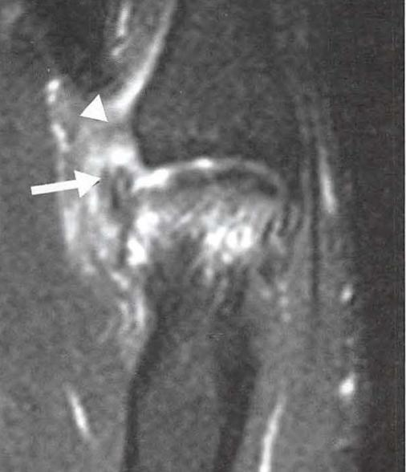

OrtoQuestões
Sala da mãoNova obra. Quem assina?
Ressonância do polegar com lesão ligamentar. TARO 2025.
AHibbsBAicheCStenerDGerber
A placa com o nome sai mais tarde.

Autor desconhecido
Polegar, 2025
Ressonância magnética. Acervo da prova TARO.
A banca pendurou esta ressonância na parede. Arraste e descubra o autor.
A imagem a seguir corresponde a uma ressonância magnética do polegar com evidência de lesão ligamentar de
Deixe a sua atribuição nos comentários.
01FAIXA
O cenário. Lesão do colateral ulnar da metacarpofalângica do polegar: o polegar do esquiador, no valgo forçado agudo, ou do guarda-caça, na atenuação crônica.
02FAIXA
A pincelada. No corte coronal, procure o coto do colateral enovelado proximal à MF, por cima da aponeurose do adutor: o ioiô na corda.
03FAIXA
O drama. Com a aponeurose no meio do caminho, o ligamento não volta ao lugar e não cicatriza sozinho.
Resposta C
Stener
Coto do colateral ulnar retraído sobre a aponeurose do adutor.
A aponeurose do adutor se interpõe entre o coto e a sua inserção. Por isso a lesão de Stener é de cirurgia obrigatória: a imobilização não recoloca o ligamento. Aparece em cerca de 60 a 80% das rupturas completas, às vezes como um nódulo palpável proximal à MF.
Radiografia antes do estresse, para não deslocar uma fratura-avulsão. Ultrassom ou ressonância para ver o Stener.
HibbsSem relação com o polegar.
ColunaAicheReconstrução da banda central, na botoeira.
DedosGerberLift-off, para o subescapular.
OmbroPara a provaCoto do colateral ulnar por cima da aponeurose do adutor na ressonância: lesão de Stener, e o tratamento é cirúrgico.
Ressonância do polegar com lesão ligamentar. TARO 2025.
A placa com o nome sai mais tarde.
Stener
Resposta C · TARO 2025
Coto do colateral ulnar por cima da aponeurose do adutor. Não cicatriza sozinho: cirurgia.
A visita completa está no feed.